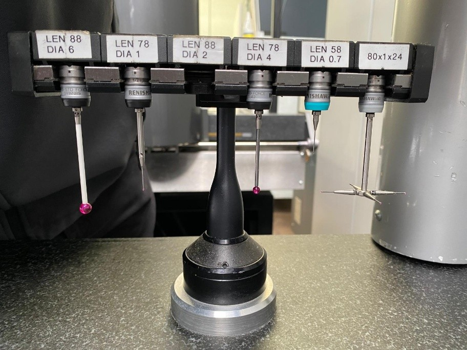
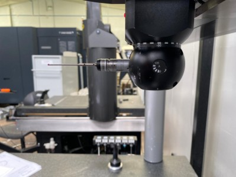

Metrology workflow from stylus selection to coordinate-system establishment
ROLECMM PROGRAMMER

01STYLUS SELECTION - Ball diameter and stem length balance feature access, clearance, reach and measurement stability; where practical, the configuration is kept short and stiff.

02PH10T PROBE HEAD - Motorised indexing head for repeatable probe reorientation.
CMM COORDINATE SYSTEM
Machine coordinates define the CMM's Cartesian X, Y and Z reference frame. During programming, measured features are used to establish a part coordinate system aligned to the component's datum structure.
The part coordinate system then becomes the reference for subsequent feature measurement and GD&T evaluation.
CARTESIAN REFERENCE FRAME
PART ALIGNMENT & DATUM ESTABLISHMENT
The component is aligned (when applicable) to the engineering drawing datum structure: primary plane → secondary feature → tertiary / rotational reference. This establishes the part coordinate system used for subsequent feature measurement and GD&T evaluation.
PRIMARY PLANE→SECONDARY FEATURE→TERTIARY / ROTATIONAL REF.→PART COORDINATE SYSTEM
PH10T A 0°–105° · B −180° to +180° · 7.5° steps · 720 positions